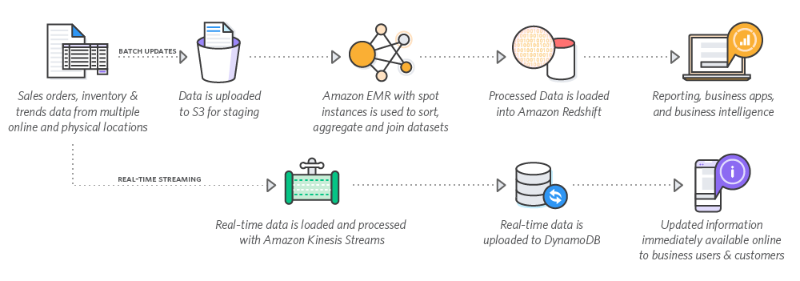

Estudos sobre Data Science
Links de Artigos / Cursos / Youtube
Artigos
Artigo - Como Iniciar na carreira de Data Science
Artigo - Conceitos pra quem está começando…
Artigo - Engenharia de Atributos (Falta Ler)
Artigo - Engenharia de Caracteristicas (Falta Ler)
Artigo - Como utilizar o featuretools (Falta Ler)
Artigo - Deep Feature Synthesis (DFS) (Falta Ler)
Artigo - Diferença entre Dashboards e Relatórios
Artigo - Medidas com tendência cental: moda, média e mediana (Falta Ler)
Artigo - Storytelling: técnicas para uma comunicação eficaz e envolvente
Vídeos
Aula sobre Engenharia de Requisitos do Prof Grabriel Tozatto
Tipos de Análises
¬ 1. Análise descritiva
A análise descritiva analisa os dados para obter insights sobre o que aconteceu ou o que está acontecendo no ambiente de dados. Ela é caracterizada por visualizações de dados, como gráficos de pizza, gráficos de barras, gráficos de linhas, tabelas ou narrativas geradas. Por exemplo, um serviço de reserva de voos pode registrar dados como o número de bilhetes reservados a cada dia. A análise descritiva revelará picos de reservas, quedas nas reservas e meses de alta performance para este serviço.
¬ 2. Análise diagnóstica
A análise diagnóstica é uma análise aprofundada ou detalhada de dados para entender por que algo aconteceu. Ela é caracterizada por técnicas como drill-down, descoberta de dados, mineração de dados e correlações. Várias operações e transformações de dados podem ser realizadas em um determinado conjunto de dados para descobrir padrões exclusivos em cada uma dessas técnicas. Por exemplo, o serviço de voo pode fazer drill-down em um mês particularmente de alta performance para entender melhor o pico de reserva. Isso pode levar à descoberta de que muitos clientes visitam uma determinada cidade para assistir a um evento esportivo mensal.
¬ 3. Análise preditiva
A análise preditiva usa dados históricos para fazer previsões precisas sobre padrões de dados que podem ocorrer no futuro. Ela é caracterizada por técnicas como machine learning, previsão, correspondência de padrões e modelagem preditiva. Em cada uma dessas técnicas, os computadores são treinados para fazer engenharia reversa de conexões de causalidade nos dados. Por exemplo, a equipe de serviço de voo pode usar a ciência de dados para prever padrões de reserva de voo para o próximo ano no início de cada ano. O programa de computador ou algoritmo pode analisar dados anteriores e prever picos de reservas para determinados destinos em maio. Tendo previsto as futuras necessidades de viagem de seus clientes, a empresa poderia iniciar a publicidade direcionada para essas cidades a partir de fevereiro.
¬ 4. Análise prescritiva
A análise prescritiva leva os dados preditivos a um novo patamar. Ela não só prevê o que provavelmente acontecerá, mas também sugere uma resposta ideal para esse resultado. Ela pode analisar as potenciais implicações de diferentes escolhas e recomendar o melhor plano de ação. A análise prescritiva usa análise de gráficos, simulação, processamento de eventos complexos, redes neurais e mecanismos de recomendação de machine learning.
Voltando ao exemplo de reserva de voo, a análise prescritiva pode analisar campanhas de marketing históricas para maximizar a vantagem do próximo pico de reservas. Um cientista de dados pode projetar resultados de reservas para diferentes níveis de gastos de marketing em vários canais de marketing. Essas previsões de dados dariam à empresa de reservas de voos mais confiança para tomar suas decisões de marketing.
Processo da Data Science
Um problema de negócios normalmente inicia o processo de ciência de dados. Um cientista de dados trabalhará com as partes interessadas do negócio para entender quais são as necessidades do negócio. Uma vez definido o problema, o cientista de dados pode solucioná-lo usando o processo de ciência de dados OSEMN:
O: Obter dados
Os dados podem ser pré-existentes, recém-adquiridos ou um repositório de dados que pode ser baixado da Internet. Os cientistas de dados podem extrair dados de bancos de dados internos ou externos, software de CRM da empresa, logs de servidores da Web, mídias sociais ou comprá-los de fontes confiáveis de terceiros.
S: Suprimir dados
A supressão de dados, ou limpeza de dados, é o processo de padronização dos dados de acordo com um formato predeterminado. Ela inclui lidar com a ausência de dados, corrigir erros de dados e remover quaisquer dados atípicos. Alguns exemplos de supressão de dados são:·
- Alterar todos os valores de data para um formato padrão comum.·
- Corrigir erros de ortografia ou espaços adicionais.·
- Corrigir imprecisões matemáticas ou remover vírgulas de números grandes.
E: Explorar dados
A exploração de dados é uma análise de dados preliminar que é usada para planejar outras estratégias de modelagem de dados. Os cientistas de dados obtêm uma compreensão inicial dos dados usando estatísticas descritivas e ferramentas de visualização de dados. Em seguida, eles exploram os dados para identificar padrões interessantes que podem ser estudados ou acionados.
M:Modelar dados
Os algoritmos de software e machine learning são usados para obter insights mais profundos, prever resultados e prescrever o melhor plano de ação. Técnicas de machine learning, como associação, classificação e clustering, são aplicadas ao conjunto de dados de treinamento. O modelo pode ser testado em relação a dados de teste predeterminados para avaliar a precisão dos resultados. O modelo de dados pode ser ajustado várias vezes para melhorar os resultados.
N: Interpretar resultados
Os cientistas de dados trabalham em conjunto com analistas e empresas para converter insights de dados em ação. Eles fazem diagramas, gráficos e tabelas para representar tendências e previsões. A sumarização de dados ajuda as partes interessadas a entender e implementar os resultados de forma eficaz.

Técnicas de Data Science
Classificação
é a ordenação de dados em grupos ou categorias específicos. Os computadores são treinados para identificar e classificar dados. Conjuntos de dados conhecidos são usados para criar algoritmos de decisão em um computador que processa e categoriza rapidamente os dados. Por exemplo:·
-
Classificar produtos como populares ou não populares·
-
Classificar as aplicações de seguro como de alto risco ou baixo risco
Regressão
é o método de encontrar uma relação entre dois pontos de dados aparentemente não relacionados. A conexão geralmente é modelada em torno de uma fórmula matemática e representada como um gráfico ou curvas. Quando o valor de um ponto de dados é conhecido, a regressão é usada para prever o outro ponto de dados. Por exemplo:·
-
A taxa de propagação de doenças transmitidas pelo ar.·
-
A relação entre a satisfação do cliente e o número de funcionários.·
Clustering
é o método de agrupar dados intimamente relacionados para procurar padrões e anomalias. O clustering é diferente da classificação porque os dados não podem ser classificados com precisão em categorias fixas. Portanto, os dados são agrupados em relações mais prováveis. Novos padrões e relações podem ser descobertos com o clustering. Por exemplo:
-
Agrupar clientes com comportamento de compra semelhante para melhorar o atendimento ao cliente.·
-
Agrupar o tráfego de rede para identificar padrões de uso diário e identificar um ataque à rede mais rapidamente.
O princípio básico por trás das técnicas de ciência de dados
Embora os detalhes variem, os princípios subjacentes por trás dessas técnicas são:
-
Ensinar uma máquina a classificar dados com base em um conjunto de dados conhecido. Por exemplo, palavras-chave de amostra são fornecidas ao computador com seus respectivos valores de classificação. “Feliz” é positivo, enquanto “Ódio” é negativo.
-
Fornecer dados desconhecidos à máquina e permitir que o dispositivo classifique o conjunto de dados de forma independente.
-
Permitir imprecisões de resultados e lidar com o fator de probabilidade do resultado.
Tecnologias mais utilizada
-
Inteligência artificial: modelos de machine learning e software relacionado são usados para análises preditivas e prescritivas.
-
Computação em nuvem: as tecnologias de nuvem deram aos cientistas de dados a flexibilidade e a capacidade de processamento necessárias para análise de dados avançada.
-
Internet das Coisas: IoT refere-se a vários dispositivos que podem se conectar automaticamente à Internet. Esses dispositivos coletam dados para iniciativas de ciência de dados. Eles geram grandes quantidades de dados que podem ser usados para mineração de dados e extração de dados.
-
Computação quântica: computadores quânticos podem fazer cálculos complexos em alta velocidade. Cientistas de dados qualificados os usam para criar algoritmos quantitativos complexos.